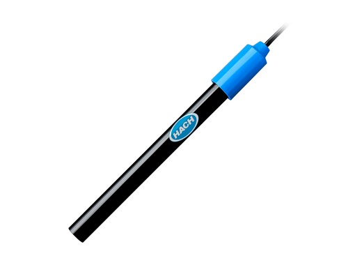
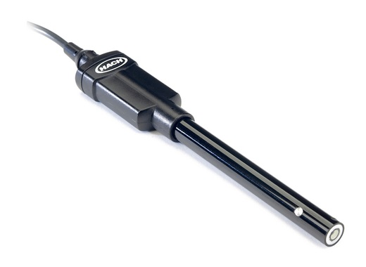

Nitrate Process Probe
Reagent-free method. Multiple beam absorption photometer with a flash lamp, turbidity compensation through reference measurement.Read More


Solitax
Solitax has a very large measuring range for both turbidity and solids the Solitax sc family offers a broad application spectrum.Read More

AN-ISE sc - Ammonium & Nitrate Probe
Carries out continuously direct measurements using an ion-selective electrode. No need for reagents or sample preparationRead More

TSS sc Inline - Suspended Solids Probe
Digital process probe for turbidity and suspended solids measurements. For the installation in tanks and closed vessels with a ball valve armature.Read More

Sanitary Conductivity Sensor
PVDF, Sanitary (CIP) Flange Mounting Style, 6m (20ft) Analog Cable, Electrodeless Conductivity Sensor, for Low pH ApplicationsRead More

Process ORP Sensor
General Purpose Online Process ORP Sensor with Integrated Digital Electronics for “Plug and Play” with Hach sc Digital ControllersRead More

Dissolved Oxygen Sensor
Immersion or flow-through probe with optical luminescence measuring method. Calibration-free & drift-free.Read More

NX7500 - Nitrogen and Carbon Sensor
NX7500 multi-parameter scanning UV sensors include a new generation of UV spectral probes for online-monitoring of nitrogen and carbon compounds.
LBOD101 Dissolved oxygen sensor for BOD measurement
Intellical LBOD101 Luminescent/Optical Dissolved Oxygen (LDO) Sensor for BOD Measurements. Probe uses unique LDO technology to deliver superior confidence in results. Sensor is used in combination with HQD portable and laboratory devices. Integrated stirrer, pressure measurement. There is no 30-minute polarization and warm-up time requirement. Low maintenance.Read More video

Read More
SENSION+ Ion Selective Electrodes (ISE)
The Sension+ Utilizes a unique solid-state sensor technology that eliminates costly membrane replacements, Requires virtually no maintenance, Provides fast, stable, and accurate response in a variety of sample types. Measuring possibilities: pH, dissolved oxygen, conductivity, ORP, ammonia, chlorides, fluorides, nitrates, nitrites.Read More

Read More
Intellical™ ISECL181 Chloride (Cl-) Ion Selective Electrode (ISE)
Intellical ISECL181 is a digital, combination, Chloride ion selective electrode (ISE) with a with a non-refillable gel Dritek reference with a double junction, ceramic porous pin and porous PTFE annular ring, and built-in temperature sensor. The electrode measures Chloride concentration in water samples.Read More

FP360 sc - Oil in Water Sensor
The FP360 sc digital UV fluorescence probe is designed for the reagent-free determination of mineral oil impurities directly in the medium or in the bypass.Read More
FP360 sc - Oil in Water Sensor
The FP360 sc digital UV fluorescence probe is designed for the reagent-free determination of mineral oil impurities directly in the medium or in the bypass.Read More
FP360 sc - Oil in Water Sensor
The FP360 sc digital UV fluorescence probe is designed for the reagent-free determination of mineral oil impurities directly in the medium or in the bypass.Read More